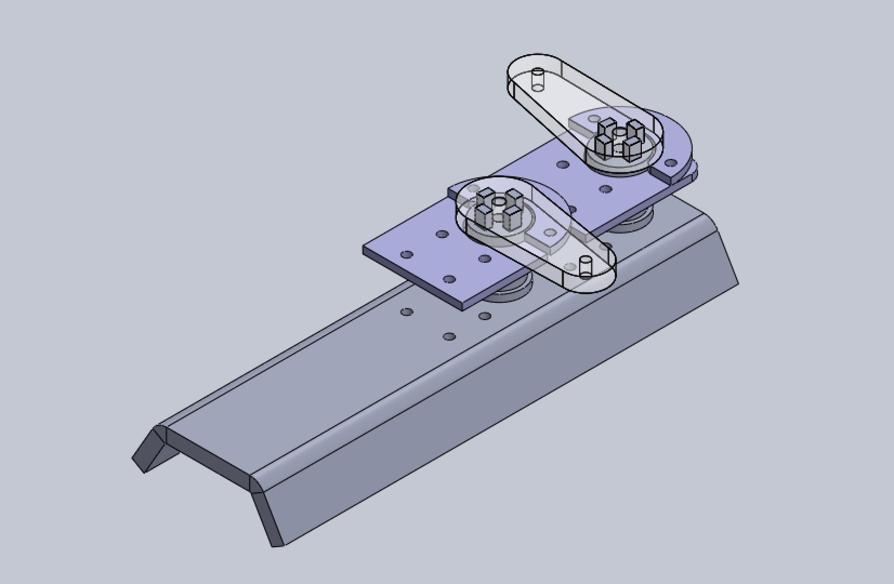
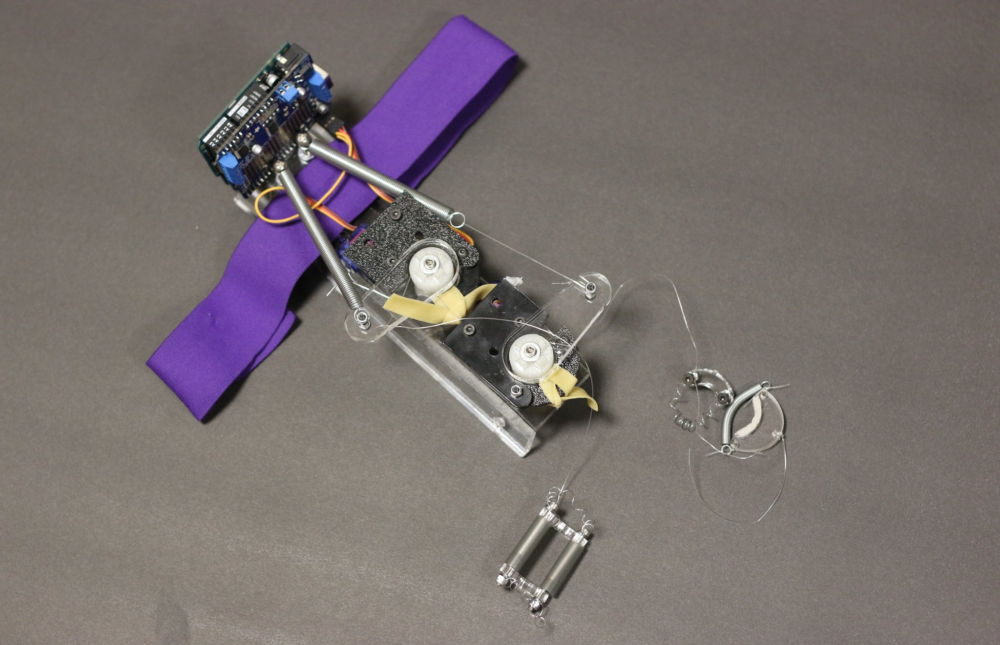
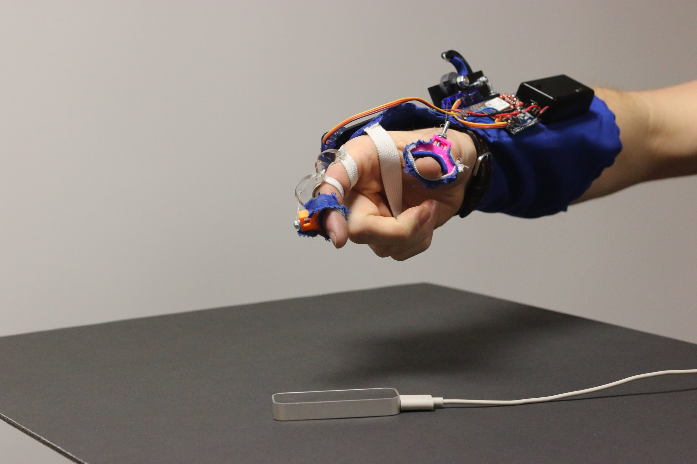
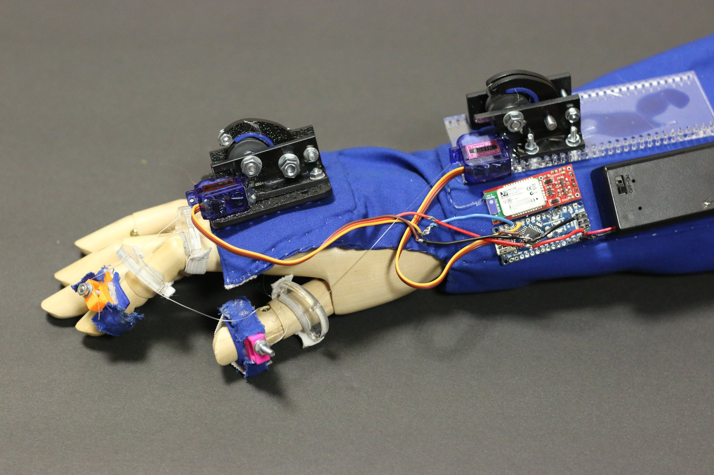

LUX
LUX was a hackathon project aimed at exploring different applications of computer vision. Its designed for all those times you need a flashlight but your two hands are full.Highlights
Expandable platform
Easy to expand and add more tracking lights and cameras.Passive Trackers
Trackers are easy to manufacture and can be made into any number objects.Collaborative
Work together with friends. Objects being tracked and the tracking units can be dynamically paired.Many Uses
The LUX platform can be used in plenty of different places. It supports large systems with one base station, or smaller portable lights with a complete tracking system.Team 16
We're a lovable gang of engineers from MIT. Find out more about us here.LUX
What is it? LUX (Light Under eXamination - we tried) was a hackathon project aimed at exploring the applications of computer vision.Overview
Virtual reality systems are gradually becoming more accessible. With the Oculus Rift, you can now visually immerse yourself in these virtual worlds and with the Leap Motion, you can even interact with these environments through gestures. Unfortunately, feedback systems are still miles behind.
We designed and built the Force Feel'd to fill in this gap created by the disparity between senses. The glove interfaces with both the Oculus Rift and the Leap Motion to bring simple, unidirectional feedback to these VR interfaces, bridging mind and hand.
Key Features
Force Feel'd was developed with the pitfalls of typical haptics systems in mind, to build a better and more robust platform.- Controls resistivity of motion, not direct manipulation of your hand.
- Interfaces with preexisting Unity projects to make it easy to integrate into projects.
- Makes use of simple Serial and Bluetooth APIs so that it can be controlled and manipulated regardless of language or project environments.
Initial Prototype and Development
We created the initial prototype at Phase I of MakeMIT, a hardware hackathon sponsored by MIT. When going about the design of the glove, we aimed for creating an experience that would provide a great deal of authenticity when interacting with objects in the virtual space while still being safe to use.
With these design principals in mind, we came up with one of the key features of the product: the glove does not control motion, but instead resist motion. The worse that our actuated components can do is prevent the user's finger from being able to push down more than it already has.
 CAD mockup for our laser cut parts for the initial prototypes.
We did this by creating finger modules that are comprised of 3 parts: the arm, the spool, and the break. The arm provides an just enough elastic force to keep the spool tight, but not enough to prevent the user from being able to actually use thier hand under normal conditions. The spool holds most of the line that is then connected to the finger. It also provides the contact surface for the break to work properly. The breaks simply surround spool and apply a range of friction forces to the spool to give the allusion of touching objects with different viscosities.
 Picture of our assembled prototype from MakeMIT Phase I.
In terms of electrical components, we used an simple Arduino communicating with a computer via serial, using signals from the computer to manipulate two servo motors. For safety we required a constant "Watchdog" signal, which if not received would release all brakes in the glove. This way if there was a software error or crash the user would not be stuck. Both power and communication was sent through the USB tether.
On the software demo side, we made heavy use of Unity and example projects that resided within the Leap Motion and Oculus SDK's. Because Unity scripts can be written in C#, we simply used the default serial library in C# to communicate with the glove through a USB host. This script has public interfaces to send different signals to the glove from within a scene. Since we wanted to add varying levels of resistance collisions of different types, we created additional scripts that would interface with our glove to dictate the degree of resistance that was desired. However this meant that any collidable object that we wanted to be able to feel with the glove would need to use implement this script and add its resistance factor, this script would then be in charge of calling a method on our main script that would. In regards to the Watch Dog signal that was described earlier, our main script that was in charge of handling the constant checking in to ensure that the device and evniroment is all properly configured.
Second Generation Improvements
While working on improvements for the second version of our product, we had two goals in mind: make the platform easier incorporate into other projects and make the glove wireless.
Since we made heavy use of Unity previously, we continued to expand on what we had and greatly improved the assets that we used to interface with the glove. This time around, we reimplemented our scripts such that it would use the physics of the objects that are being interacted with to dictate how much resistance was to be provided. This didn't require additional scripts that would need to be added to each object that would be collided with, instead the hand asset would be able to detect collisions and from there send the message to glove with how much resistivity was needed for the collision.
 Picture of the second prototype and Leap Motion Sensor.
To accomplish the second goal, we added a Bluetooth sensor and battery pack along with using a smaller microcontroller to have this package fit more easily on the forearm. This all required us to move away from the straight serial implementation that we had before to instead using Bluetooth to communicate to the glove. This required that we start up a Bluetooth server and have our demos connect to the glove to start transmission. Furthermore, our new watchdog signal would be whether the glove is connected to our demo or not.
In terms of the other hardware, the focus was to make the footprint of the different compoenents smaller, thus making the whole glove easier to wear. As such we created smaller, vertical brakes as well using fabric for the base of the glove. We also shrunk the footprint of the electical components by using a smaller arduino and a small bluetooh receiver.
 Close-up photo of second generation prototype.
Team 16
The team got together to work on this project idea at MakeMIT (2017). Comprised of 5 undergraduates from MIT, 4 seniors and 1 sophomore. 4 of the members, were part of the team that created Force Feel'd.David Rosales launch
Sophomore at MIT studying Computer Science.Worked heavily on the software side of LUX.
Everardo Rosales launch
Computer Systems Engineer. Operating systems, computer architecture, fullstack web development, etc. Currently a Senior at MIT majoring in Computer Science and loves building, hacking, and creating random projects.On the software sides of the project with David. I was specifically in charge of system setup and integration of the different systems we used. This really just amounted to wrestling with everything to make sure all of the required configurations were set and everything could be built. Lots of pair programming with David.
Joshua Sloane
Electrical engineer with experience in embedded design and IC design. A Senior at MIT majoring in electrical engineering.For LUX, he did the electronics design and assembly, along with the needed microcontroller programing to interface with the servos and the computer. He also worked on both the microcontroller and computer side debugging the interface to ensure reliability. Finally he set up some capacitive touch buttons for controlling the light's brightness.
Joanna Zhu launch
Junior at MIT studying Mechanical Engineering looking forward to narrowing my focus to product design with a strong background in robotics.For the first prototype, was tasked with all of the CAD work and processing for 3D printing and laser cutting. Also worked on bits and pieces of the general design of the hardware. For the second prototype, did all of the ergonomic work and design, as well as the design for the finger mounts and arm plates.
Thomas Needham launch
Hands-on mechatronics Junior at MIT interested in working on the behind-the-scenes portions of new tech. Structures, controls, robotics, automation, and solving problems such that the user doesn't even notice.For the first generation Force Feel'd, he designed both generations of our braking mechanism, finger supports and forearm mount, and ancillary mechanicals for both models. Additionally, manufacture and assembly of "hard" components (non-ergonomic) especially for the second generation Force Feel'd - with access to a full shop beyond just laser cutters and 3D printers.